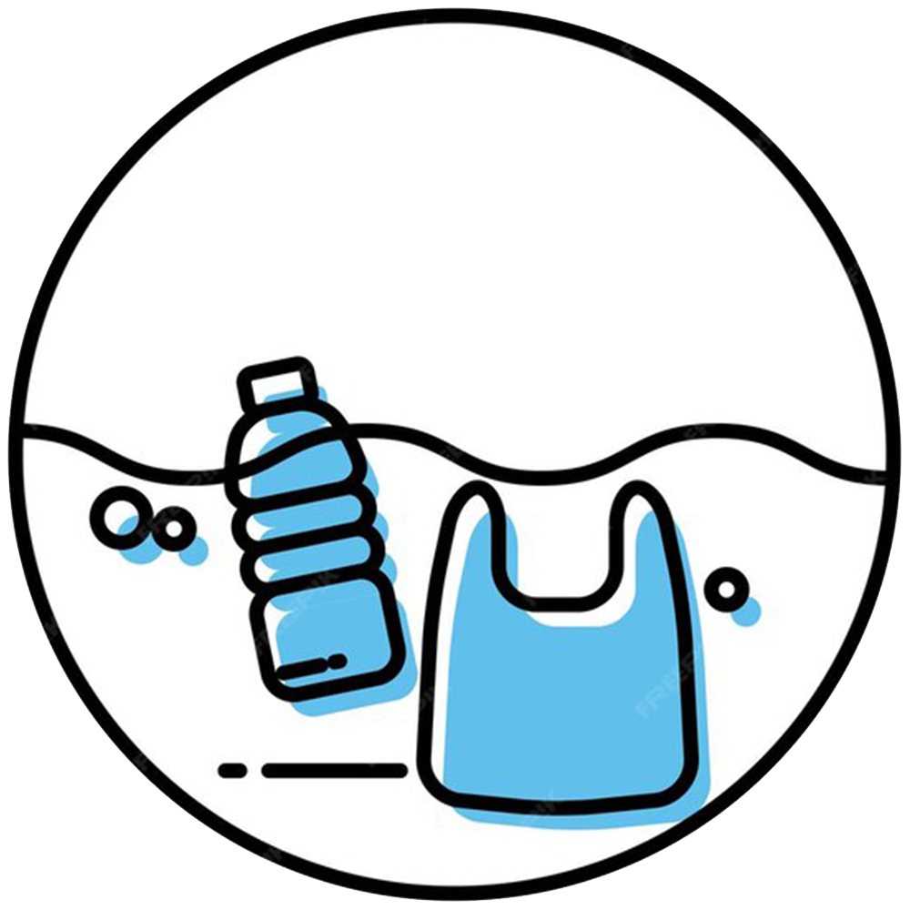
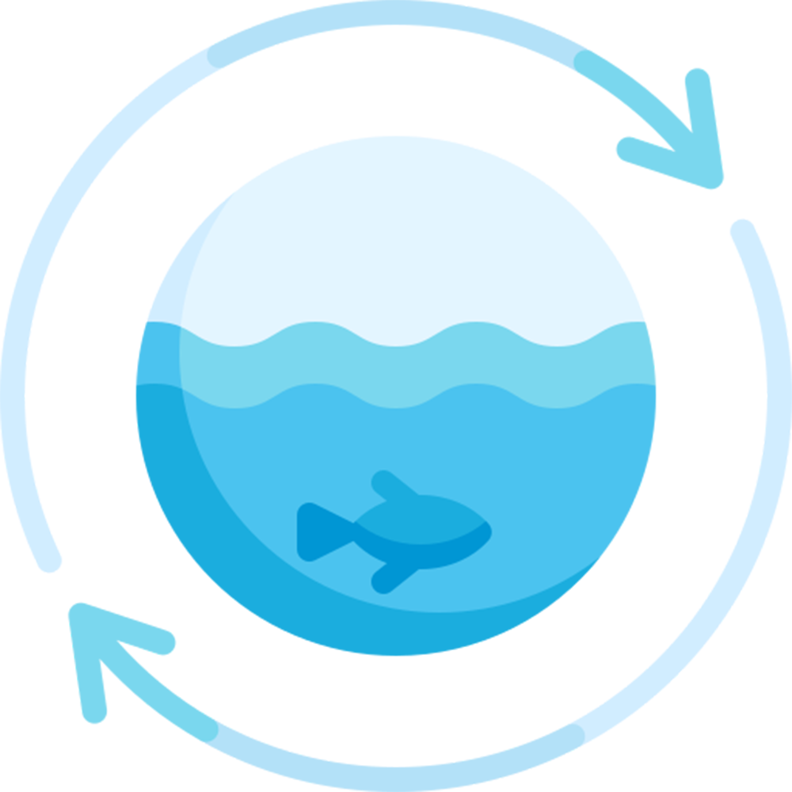
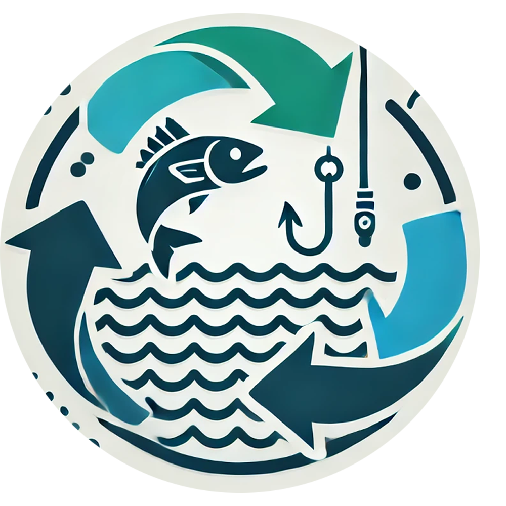
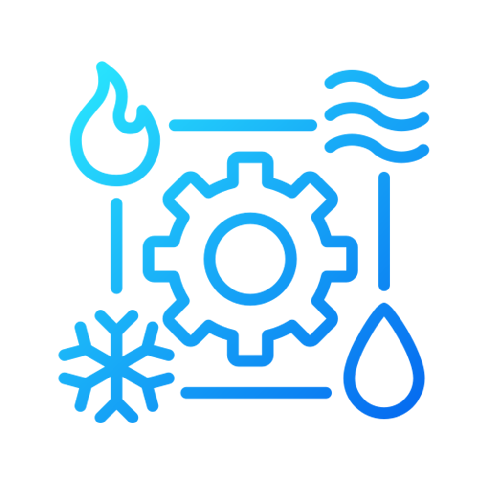

Life Below Water
The oceans, Earth's vast blue heart, teem with countless unseen creatures. SDG 14 rallies us to shield these waters, fight pollution, and sustain sea-dependent lives. Dive in—help protect life below water for tomorrow!
Explore the DepthsThe Ocean's Edge
Why We Can't Look Away
Oceans aren't just vast—they're our lifeblood, pumping oxygen and swallowing carbon. They fuel 3 billion dreamers, workers, and explorers. But they're drowning in plastic, overfishing, and heat. This isn't a drill—it's a wake-up call.
Our Mission
Blueprint for the Blue
As we descend deeper into the open ocean, our commitment to marine conservation grows stronger. We work tirelessly to protect these waters from pollution, overfishing, and climate change. Our mission extends beyond conservation—it's about preserving the delicate balance of life that sustains our planet.
Key Focus Areas
Waves of Action
Trash
Takedown

Sinking plastic chaos, chemical spills, and oil stains for a cleaner blue.
Ecosystem Overdrive
Turbocharging reefs, mangroves, and rare sea dwellers back to life.
Fish
Forward

Rewriting the rules so nets don't empty the sea—or coastal hopes.
Climate
Reset

Battling acid tides and scorching waters head-on.
Join Our Mission to Protect Life Below Water
Together, we can make a difference for our oceans and all the life they support.